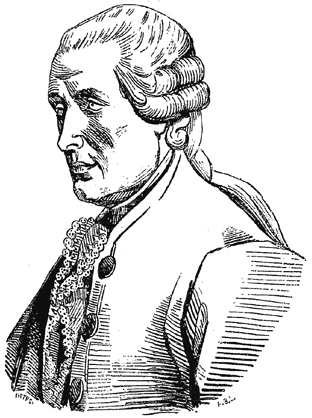

파리, 1739년 봄. 시계공 자크 드 보캉송이 무대에 오리 한 마리를 올립니다. 황동으로 만든 오리는 모이를 쪼고, 날개를 펴고 — 사람들 앞에서 똥을 쌌습니다.
유럽이 환호했습니다. 기계가 살아있다고. 왕도 보러 왔고, 볼테르는 “프랑스의 영광은 보캉송의 오리뿐”이라 비꼬았습니다.

Jacques de Vaucanson (1709—1782) · Wikimedia
그래도 한 가지는 진짜였습니다 — 흉내는 사람을 속일 수 있다는 것. 31년 뒤, 빈의 궁정에 또 다른 상자가 도착합니다.